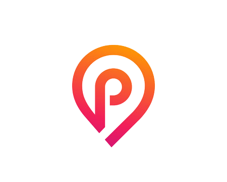

<ion-header>
  <ion-toolbar color="light">
    <ion-buttons slot="start">
      <ion-menu-button color="dark"></ion-menu-button>
    </ion-buttons>
    <ion-title class="ion-text-center">
        
        <ion-label>Pinder</ion-label>
      
    </ion-title>
  </ion-toolbar>
</ion-header>

<ion-content [fullscreen]="true">
  <sw-card-wrapper #cardWrapper>
    <div class="card" *ngFor="let profil of default, let index = index"
     [class.visible]="profil.visible" [class.hidden]="!profil.visible"
     swSwipeable
     width="350"
     height="500"
     orientation="x"
     (swiped)="swiped($event, index)">
     
      <h2>{{profil.pseudo}}</h2>
    </div>
</sw-card-wrapper>
<ion-grid class="Button_Action_flex">
  <div>
    <ion-button (click)="swipeleft()" mode="ios" class="large_button" shape="round" fill="outline" >
      <ion-icon color="danger" name="close"></ion-icon>
    </ion-button>
  </div>
  <div>
    <ion-button (click)="swiperight()" mode="ios" class="large_button" shape="round" fill="outline">
      <ion-icon color="success" name="heart"></ion-icon>
    </ion-button>
  </div>
</ion-grid>

    
</ion-content>

